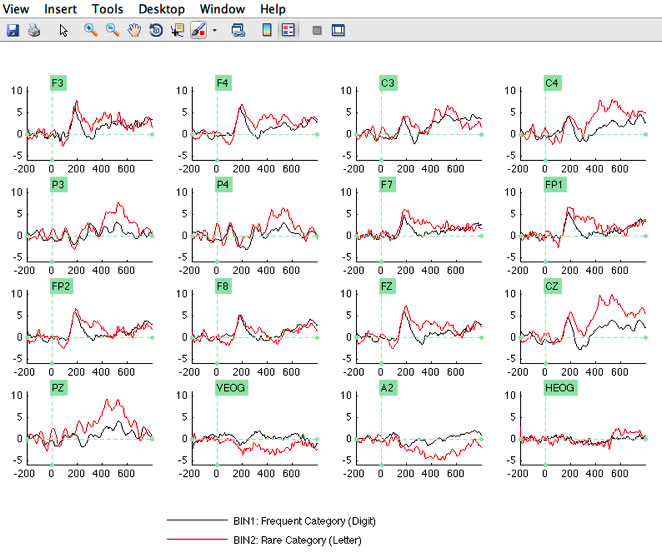
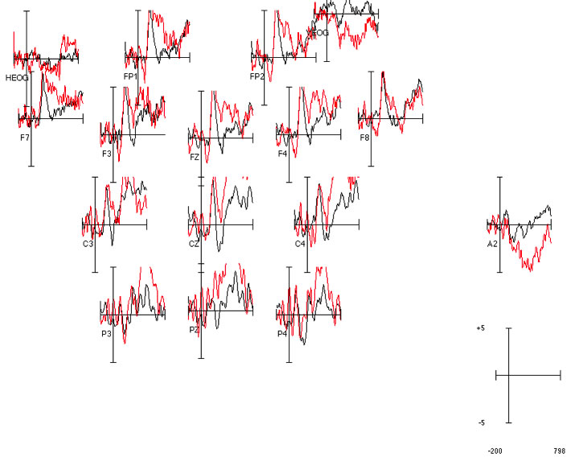

Once you have an ERP structure active in an ERPset (via averaging or by loading a saved ERPset from disk), you can plot the data with the ERPLAB > Plot ERP Waveforms function. It is designed to be a relative simple plotting routine that can be used for one of two purposes: 1) Providing a quick-and-dirty view of your averaged data; and 2) Exporting this view as a vector file that can be read into a commercial graphics program such as Adobe Illustrator. The Plot Averages module is not intended to provide the flexibility necessary to directly produce publication-quality images; this should be done by exporting the waveforms into a commercial graphics program. The Plot ERP Waveforms GUI is shown in the screenshot below, along with an example of a plot created with the shown parameters.

You will typically begin by selecting which bins and channels to plot, along with the time range to show, the period to be used for baseline correction, and the Y (voltage) scale. You can click on the +/- symbol to control whether positive or negative is plotted upward. You then click the PLOT button to create a window showing the waveforms. If you click the Convert Existing Plot to PDF button, the plot will be saved as a PDF file, which you can print or import into a graphics program (unfortunately, there is no easy way to create a PDF file without first plotting to the screen).
It is important to note that the plotting function gets information from the currently active ERPset when you launch the plotting GUI. If, while the GUI is active, you select a different ERPset, the plotting GUI will not "know" that you have done this, which could lead to much confusion. Thus, you should always quit from the plotting GUI before accessing any other ERPLAB functions. This is true of the other ERPLAB functions as well (i.e., when the GUI for one ERPLAB function is open, you should not access other ERPLAB functions). However, it is particularly tempting to try to use the ERPsets menu to select a new ERPset while the plotting GUI is open. But don't do it! In a future version of ERPLAB we will make it possible to select a different ERPset from the plotting GUI. For now, you will need to first close the plotting GUI, then select a different ERPset, and then launch the plotting GUI again (by selecting ERPLAB > Plot ERP Waveforms).
Fortunately, the plotting GUI will remember the settings from the last time you used it, so you will not lose your settings when you close the GUI to select a new ERPset. But this sometimes leads to other problems. For example, if the new ERPset was created with a different epoch period, the time range that you used the last time you used the plotting GUI may no longer be valid. If you click the RESET VALUES button, the GUI will reset to default parameters that reflect the currently active ERPset.
Note: In the current version, it is not possible to plot waveforms from different ERPsets in the same plot. If you want to do this, you can append one ERPset onto the end of another ERPset with ERPLAB > Utilities > Append ERPsets. This will create a new ERPset that has twice as many bins (all the bins from the first ERPset followed by all the bins from the second ERPset). You can then overlay the bins corresponding to the original first and second ERPsets. We will create an easier method for this in a future version.
In the example plot shown above, you will see a set of menus and a toolbar. These menus are available because Interactive plot window was selected in the plotting GUI. When this option is set, ERPLAB uses a standard MATLAB plotting routine to plot the waveforms. This routine provides many options that allow you to interact with the plots. For example, if you click within one of the panels of the plot (i.e., the set of waveforms for a given channel), a new window will appear showing a larger view of this panel. In addition, if you click the data cursor button in the tool bar, you will see a cursor that allows you to see the X and Y values at any point on a waveform by clicking on it. The downside of this mode of plotting is that it requires that the X baseline be plotted at the bottom of each panel. We usually want the X baseline to be at zero µV in ERP figures. To achieve this, simply de-select Interactive plot window and plot the data again. We recommend that you include the toolbar when you are just planning to look at the data from within Matlab during the course of data analysis, and we recommend that you turn it off when you are making a figure for a presentation or paper.
Here are the details of the options:
Bins to Plot
This is simply a list of the bins that should be included in the plot, in the standard Matlab format (e.g., "2 3 4 5" or "2:5"). Currently, ERPLAB creates a separate panel for each channel and overlays the selected bins within each panel, but we plan to allow more complex plots in future versions. Note that a popup menu next to the text box will allow you to see the bin labels along with the bin numbers so that you do not need to remember the bin numbers.
Channels to Plot
This is simply a list of the channels that should be included in the plot, again in the standard Matlab format (e.g., "2 3 4 5" or "2:5"). A popup menu next to the text box will allow you to see the channel labels along with the channel numbers so that you do not need to remember the channel numbers. An option is provided for plotting the channel numbers rather than the channel labels.
Time Range and Ticks
The Time Range field allows you to specify the time range that will be shown in the plots. This range must not exceed the epoch length of the data. The default is the entire epoch.
The Tick Values field allows you to control the placement of time ticks. You can simply list the time points at which ticks should appear (e.g., "-100 0 +100 +200 +300 +400 +500"). Alternatively, you can use the standard Matlab format of start:step:end (e.g., "-100:50:500" to start at -100 ms and put ticks every 100 ms through 500 ms).
Y Scale and Ticks
This panel determines the amplitude scaling. If Auto is selected, the plotting function determines a scale based on the minimum and maximum points across all waveforms that will be plotted. If you de-select Auto, you can enter the minimum and maximum voltages that will be shown in each panel of the plot. You can also click the +/- button to determine whether positive or negative is plotted upward (the button shows + on top if positive is plotted upward and – on top if negative is plotted upward).
The Tick Values field allows you to control the placement of amplitude ticks, and is analogous to the time tick field. You can simply list the amplitude values at which ticks should appear (e.g., "-2 -1 0 +1 +2 +3 +4"). Alternatively, you can use the standard Matlab format of start:step:end (e.g., "-1:1:4" to start at -1 µV and put ticks every 1 µV through +4 µV).
Baseline Correction
The Baseline Correction panel allows you to specify the time range that will be used to baseline the plots. In most cases, you will have already baselined your data during epoching, and it is not necessary to re-baseline the data before plotting. However, it doesn't hurt, and it is good to be reminded that the baseline period plays an important role in determining the amplitude at each time point in the waveform. The default baseline period is the prestimulus interval (Pre). You can also select None (no baselining), Post (post-stimulus interval), Whole (the entire epoch), and Custom (in which case you must enter the time period in milliseconds). When the data are plotted, the average voltage across the selected interval is subtracted from each point in the waveform.
Mean Global Field Power
If the Include MGFP option is selected, ERPLAB will compute the mean global field power across the specified channels and plot this along with the individual channels. MGFP is the standard deviation across the selected electrode sites at each moment in time, and it can provide a good measure of overall activity at each time point (especially when a large number of electrode sites, spanning most of the head, are included in the calculation).
Topographic Arrangement
If you select Topographic Arrangement, the electrode location information will be used to plot the channels in their appropriate positions, as shown in the screenshot below. You may need to adjust the width (w) and height (h) parameters to produce appropriately sized waveforms. These parameters control how wide and tall each waveform is as a proportion of the window width (e.g., a w value of 0.10 means that each waveform will be 10% of the window width).

Formatting Options
The Set frame(s) option allows you to determine how many rows and columns will be shown. The line width sets the width of the line used for drawing the waveforms. The Set fonts option allows you to determine the font size that will be used for the channel labels and for the legend. The Legend pos option allows you to determine whether the legend will be plotted at the bottom of the figure, the right of the figure, or in a separate window.
| <<Filtering | Table of Contents | Topographic Mapping>> |